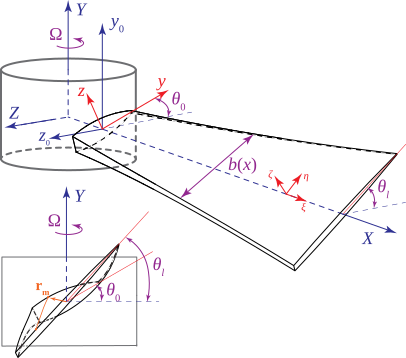
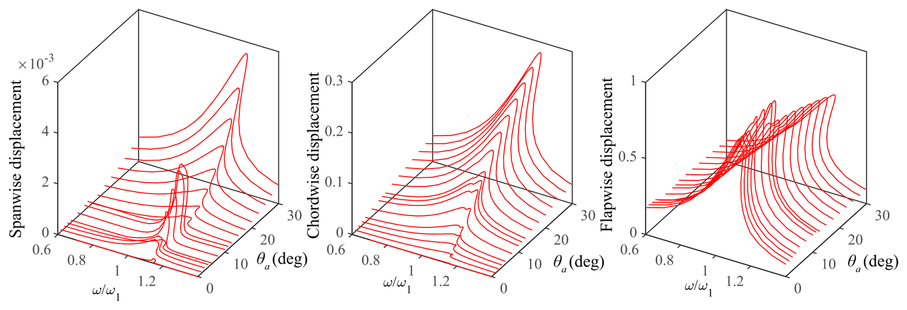

Nonlinear vibrations of a high-fidelity model of rotating pre-twisted blades with thickness and chord length variations including nonlinear centrifugal effects
Prof. Ender Ciğeroğlu (Middle East Technical University)

The blade model: a pre-twisted blade with varying chord b(x), mounted on a rotating hub, described with surface coordinates.
The problem
Blades in turbines, compressors and other rotating machinery work under strong centrifugal forces, and often under sudden heating from the flow around them. Their shape is rarely simple: they are mounted at a pre-set angle, twisted along the span, and their thickness and chord length change from root to tip. Designing them reliably and economically needs models that predict how such blades vibrate, including at large amplitudes, where the behavior becomes nonlinear.
Most existing models make the problem tractable by simplifying it: beam or plate theories instead of the real geometry, only part of the rotation-induced forces, or reduced models that keep just a few dominant modes. Detailed finite element models capture more, but are too expensive for the many runs that design studies and nonlinear analyses require. One question in particular had no clear answer: how much does the way we model centrifugal stiffening change the predicted vibrations?
Our approach
The project built one modeling framework that keeps the geometry, the physics and the numerics at high fidelity at the same time.
Real blade geometry
The blade is described with the theory of surfaces, including pre-set and pre-twist angles, thickness and chord-length variations and tapering. A one-to-one mapping turns this complex shape into a simple computational domain.
Complete rotational physics
Coriolis, centrifugal stiffening and rotational softening effects are included. Centrifugal stiffening is modeled in two widely used ways, direct integration of centrifugal forces (DICFs) and pre-stressed analysis about the steady-state equilibrium deformations (SSEDs), in linear and nonlinear form, so the two can be compared within the same model. The framework also covers coupled thermo-elasticity under thermal shock and full geometric nonlinearity.
Fast and accurate numerics
The equations are discretized with the spectral Chebyshev technique, a meshless method with spectral accuracy. An analytical Jacobian, a new reduced-order modeling framework and the harmonic balance method with arc-length continuation make large nonlinear frequency-response studies practical. All models are validated against commercial finite element software.
Key results
57×Faster natural frequencies than FE
~200×Faster harmonic-balance steps
70×Fewer degrees of freedom
0.49%Avg. difference, 1,000 modes
57×: average over ten blade cases, with the finite element software limited to the same CPU cores. ~200×: one harmonic-balance iteration with the analytical Jacobian (about 3 s) instead of finite differences (about 638 s). 70× and 0.49%: a twisted blade modeled with 14,040 degrees of freedom against 3D finite element models with over one million.
There is no universal "high-speed" threshold. At low rotation speeds the DICFs and nonlinear pre-stressed models agree; as speed rises they diverge, because DICFs ignores the steady-state deformations. When this happens depends on the size of those deformations, not on a fixed RPM: blades with larger chords or asymmetric thickness can enter the high-speed regime at much lower speeds.
A linear pre-stressed analysis can be misleading. For pre-set or pre-twisted blades at high speed it can produce spurious natural frequencies and misrepresent out-of-plane deformation; it is safe only for blades without pre-set and pre-twist.
Under thermal shock, the steady-state deformation matters. Total deformation must include both thermal deformation and the SSEDs. The DICFs model, which leaves the SSEDs out, gives markedly different total deformation even at low speeds, and the thermo-elastic coupling becomes important once the blade is both twisted and rotating.
Low-order models exaggerate nonlinear behavior. Models with only a few modes show sharp loops, branches and modal interactions that smooth out as more modes are kept, so they are useful for insight but not for quantitative prediction. The high-order models reveal resonance-peak shifts, extra resonance peaks, multi-valued responses, internal resonances, mode coupling and frequency veering.
In-plane modes carry the nonlinearity. Choosing modes only by their contribution to the displacement misses the backbone of the frequency response. A second, force-based criterion keeps in-plane modes that barely move the blade but carry its nonlinear restoring forces.

Nonlinear frequency response of the pre-twisted blade under a flapwise harmonic force: spanwise, chordwise and flapwise amplitudes against excitation frequency (ω/ω1) as the pre-twist angle θa grows from 0° to 30°. The chordwise resonance amplitude rises with twist, while the spanwise and flapwise amplitudes jump around 3.75° and 11.25°.
Figure: S. Lotfan, E. Ciğeroğlu, Nonlinear Dynamics 113 (2025) 25753–25785, Fig. 10, licensed under CC BY 4.0.
What this means for design
For rotating blades, the choice of centrifugal-stiffening model should follow the size of the steady-state deformation rather than a speed limit, and quantitative nonlinear predictions need high-order reduced models. Because the spectral Chebyshev framework reaches finite element accuracy at a fraction of the cost, these high-fidelity analyses become practical for the many parameter studies that blade design requires.
Journal of Sound and Vibration, 594, 118669. The first study of the coupled thermo-elastic dynamics of rotating pre-twisted blades exposed to thermal shock. Coriolis, centrifugal stiffening and rotational softening are included, and DICFs is compared with linear and nonlinear pre-stressed dynamics about large-amplitude SSEDs. The paper shows that total deformation must include the SSEDs, that a linear pre-stressed analysis can give spurious natural frequencies, and that the spectral solution finds natural frequencies 57 times faster than finite element software.
Nonlinear Dynamics, 113, 25753–25785 (open access). Extends the two-dimensional spectral Chebyshev technique to geometrically nonlinear beams, plates and shells with arbitrary boundary shapes, validated in five case studies from a clamped beam to a pre-twisted blade. An analytical Jacobian cuts the cost of each harmonic-balance iteration about 200 times, and a two-criteria reduced-order model keeps the in-plane modes that carry the nonlinear restoring forces.
Thin-Walled Structures, 218, 114134. Brings the project together: high-order nonlinear models of rotating pre-twisted blades with variable thickness and chord, comparing DICFs with linear and nonlinear pre-stressed analysis in one framework. It shows that there is no universal speed at which the models diverge, since this depends on the steady-state deformation and hence the geometry, and that low-order models exaggerate nonlinear features while high-order models reveal internal resonances, mode coupling and frequency veering.
Presented at the 27th International Conference on Composite Structures (ICCS27), 3–6 September, Ravenna, Italy. The talk introduced the spectral Chebyshev framework for rotating blades made of axially functionally graded material with curved chord-length variation. Its solution of the integral boundary value problem agrees closely with finite element results while taking a fraction of the time.
This work was supported by the Scientific and Technological Research Council of Türkiye (TÜBİTAK) under the 1001 – The Scientific and Technological Research Projects Funding Program, project number 123M046.